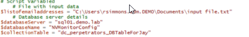
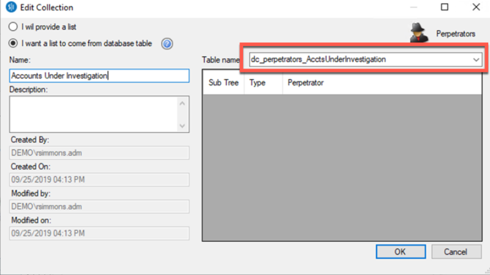
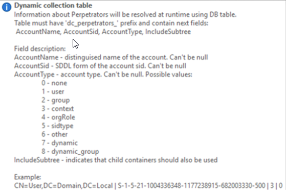
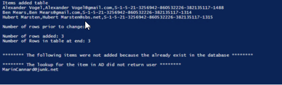
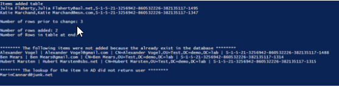

Summary: How to update a collection from a database table in StealthINTERCEPT
Issue: We have a feature in StealthINTERCEPT that allows you to update a collection from a database table. It is rather simple code but a working example you can leverage in your lab. I had a customer that needed to update a collection from a list of email addresses. The first part of the email address is the logon name. So the sample script allows them to update a dynamic collection in SI by reading their input file.
It is nothing magical but feel free to modify or use in any examples as I have heard this request a number of times. I tried to comment the code so it is easy to read.
Instructions: Called out a couple variables you can edit at the top of the file

The file with email addresses looks like
email@address.com
email2@address.com
The just input your server, database name should be the same and table name you can get from SQL or SI
Configuration | Collections | Perpetrators
Click Manage
Choose or add a new collection click edit or add
Ensure the collection has the option I want a list to come from a database table

The dynamic collection table can be automatically created and must have a couple fields
- Distinguished Name
- Object SID
- Account Type
- Subtree

I put together a sample script for a customer that would
- Based on a list of email addresses it parses the string and uses everything before the @ symbol to look up the user by SAMAccount Name.
- If the user is found it checks the DB Table to see if the users is already in the collection
- If the user is not in the collection they are added
It does log if the user is not found in AD
It does log if the user if the user is already in the collection

Above is an example shows updating the db where only one user in the file was not found in AD
Below shows adding 2 items
Detecting 3 existing items
1 item was not found on the AD lookup

http://downloads.stealthbits.com/access/files/Utilities/StealthINTERCEPT/DB%20Collection%20Update.ps1.zip
Product: StealthINTERCEPT
Module: SI - Admin Console;SI - Enterprise Manager
Versions: All
Legacy Article ID: 2458